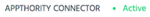
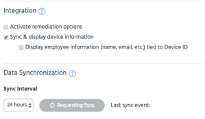
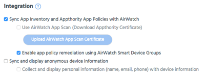

Use these options to view and manage the data sync between Appthority and your EMM. Options on this page vary depending on your selected EMM.
Access these options from the Admin > EMM sub-tab.
Tip: Once you select Enable EMM integration in Admin > Organization, you must have an active Connector before the EMM sub-tab will be available. Complete Connector deployment (for on-premises) or enter api credentials and wait briefly (for cloud).
Appthority Connector will display active status once Connector is running.

Tip: See EMM Overview Workflow for end-to-end steps to implement EMM functionality in Appthority.


Note: If you selected AirWatch as your EMM vendor, App Scan options may be available. Appthority first determines whether your version of AirWatch supports App Scan 2.0. If supported, App Scan options will display. If App Scan is not available, an icon will appear when you hover over the option, and you will not be able to select it.